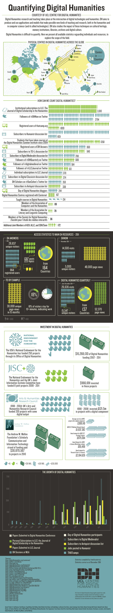

Or is it, “in digital humanities”? We still haven’t figured that out, have we?

Originally published at Digital Humanities Specialist. This edition preserves the original text and historical context.
Or is it, “in digital humanities”? We still haven’t figured that out, have we?
